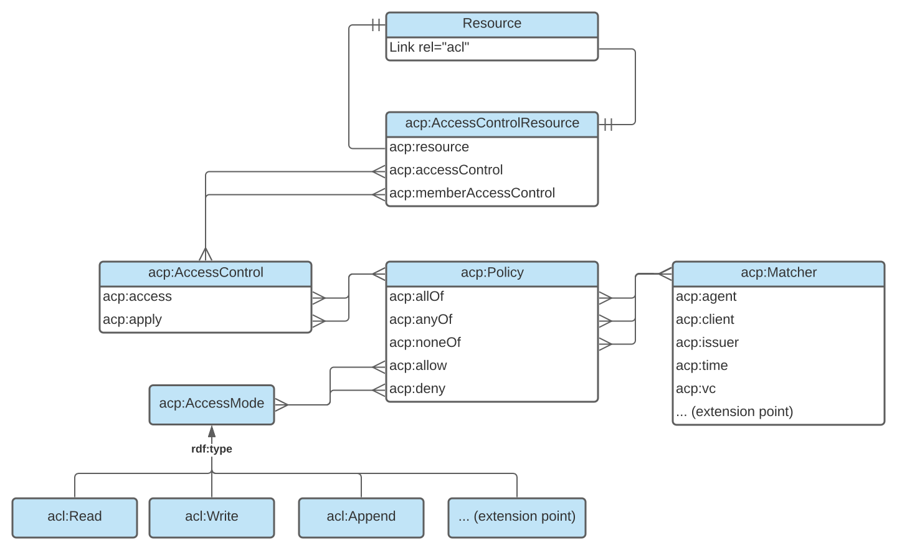

1. Introduction
This section introduces ACP with an overview of key terminology, an explanation of the conventions used in this document, example graphs to illustrate basic concepts of resource access description and validation, and a diagram representing the main elements of the ACP data model.
1.1. Terminology
Throughout this document, the following terminology is used.
This document uses the terms resource, RDF graph, RDF triple, IRI, literal, blank node, node of an RDF graph, RDF term, and subject, predicate, and object of RDF triples, and datatype as defined in RDF 1.1 Concepts and Abstract Syntax [rdf11-concepts].
In ACP, the conditions mandating access over a resource are expressed as Access Controls, Policies, and Matchers, in the form of an RDF graph called the resource's "authorization graph". Authorization graphs are applied to resource access descriptions expressed in the form of an RDF graph called a "context graph". As ACP authorization graphs are used to validate whether context graphs satisfy a set of conditions, they can also be viewed as a description of the context graphs that satisfy these conditions. The result of applying an authorization graph to a context graph is an access modes grant, expressed in the form of an RDF graph called an "access grant graph".
1.2. Document conventions
Within this document, the following namespace prefix bindings are used:
| Prefix | Namespace |
|---|---|
acp:
|
http://www.w3.org/ns/solid/acp#
|
acl: |
http://www.w3.org/ns/auth/acl#
|
ex: |
https://example.com/ |
ldp: |
http://www.w3.org/ns/ldp#
|
rdf: |
http://www.w3.org/1999/02/22-rdf-syntax-ns#
|
rdfs: |
http://www.w3.org/2000/01/rdf-schema#
|
owl: |
http://www.w3.org/2002/07/owl#
|
Throughout the document, color-coded boxes containing RDF graphs in Turtle syntax will appear. These RDF representations implicitly use the prefix bindings defined above.
# This box contains a context graph
# It describes the properties of a resource access
_:context
acp:agent ex:Bob ;
acp:resource ex:resourceX .
# This box contains an authorization graph
# It describes the conditions required for accessing a resource
ex:accessControlResourceA
acp:resource ex:resourceX ;
acp:accessControl ex:accessControlB .
ex:accessControlB acp:apply ex:PolicyC .
ex:PolicyC
acp:anyOf ex:agentMatcherD ;
acp:allow acl:Read .
ex:agentMatcherD
acp:agent ex:Bob .
# This box contains an access grant graph
# It describes in context the granted access over a resource
_:context
acp:agent ex:Bob ;
acp:resource ex:resourceX ;
acp:mode acl:Read .
1.3. Conformance
All assertions, diagrams, examples, and notes are non-normative, as are all sections explicitly marked non-normative. Everything else is normative.
The key words MAY, MUST, MUST NOT, and SHOULD are to be interpreted as described in [RFC 2119] .
1.4. Example graphs
This section is non-normative.
The following example context graph contains the attributes of a resource access and could be translated as "Bob is trying to access resource X using client application Y with his identity asserted by identity provider Z.":
_:context
acp:agent ex:Bob ;
acp:resource ex:resourceX ;
acp:client ex:ClientApplicationY ;
acp:issuer ex:IdentityProviderZ .
The following example authorization graph contains the conditions of access to resource X and could be translated as "Access to resource X is mandated by access control resource A. Access control B applies policy C which allows access mode acl:Read when agent matcher D is satisfied. The agent matcher D is satisfied when Alice or Bob are the context graph agent.":
ex:accessControlResourceA
acp:resource ex:resourceX ;
acp:accessControl ex:accessControlB .
ex:accessControlB
acp:apply ex:PolicyC .
ex:PolicyC
acp:anyOf ex:agentMatcherD ;
acp:allow acl:Read .
ex:agentMatcherD
acp:agent ex:Alice, ex:Bob .
The following example access grant graph is the result of applying the previous authorization graph to the previous context graph. Since Bob was matched as the context agent and there is no further restrictions, the policy allowing acl:Read applies. The following resource access graph could be read as "The access mode acl:Read has been granted over resource X to Bob that was using client application Y and whose identity was asserted by identity provider Z.":
_:context
acp:agent ex:Bob ;
acp:resource ex:resourceX ;
acp:client ex:ClientApplicationY ;
acp:issuer ex:IdentityProviderZ ;
acp:mode acl:Read .
1.5. Data model
This section is non-normative.
The following diagram illustrates the main elements of ACP.
1.6. Ontology
A non-normative RDF representation of the Access Control Policy ontology is maintained as a companion document to this specification and available here in turtle serialization format.
2. Context graph
This section introduces the ACP constructs used to define the attributes of a resource access instance.
In ACP, a context graph describes the attributes of a resource access instance that can be matched to a set of conditions defined in the form of an authorization graph in order to determine an access modes grant. If no resource access attribute is matched, the granted set of access modes over a resource is always empty.
2.1. Context
acp:Context- In ACP, descriptions of resource access are instances of the Context class.
The following example context graph denotes that an instance of resource access over resource X was initiated by Bob:
_:context
a acp:Context ;
acp:agent ex:Bob .
2.2. Context attributes
In ACP, RDFS sub-properties of the
acp:attribute predicate are used to describe resource
access.
acp:attribute-
An attribute describing
resource access. The
ACP
acp:attributepredicate has a range ofrdfs:Resourceand a domain ofacp:Context. acp:resource-
A resource subjected to ACP
access control.
ACP
resource is a sub property of
acp:attribute. acp:agent-
An agent trying to access a
resource.
ACP agent
is a sub property of
acp:attribute. acp:creator-
An agent credited as the
creator of a resource.
ACP
creator is a sub property of
acp:attribute. acp:owner-
An agent credited as the
owner of a resource.
ACP owner
is a sub property of
acp:attribute. acp:client-
A client application used to
access a resource.
ACP
client is a sub property of
acp:attribute. acp:issuer-
An identity provider credited as the
issuer of the credentials
that asserted the identity of the agent trying to access a
resource.
ACP
issuer is a sub property of
acp:attribute. acp:time-
A time at which a resource
is accessed.
ACP time
is a sub property of
acp:attribute. acp:vc-
A
verifiable credentials that
is presented as part of a resource access request.
ACP vc is
a sub property of
acp:attribute.
The following example context graph denotes that an instance of resource access over resource X was initiated by Bob using cient application Y with his identity asserted by identity provider Z; it also denotes that Bob is the owner of resource X and Alice is the creator of resource X:
_:context
a acp:Context ;
acp:agent ex:Bob ;
acp:resource ex:resourceX ;
acp:owner ex:Bob ;
acp:creator ex:Alice ;
acp:client ex:ClientApplicationY ;
acp:issuer ex:IdentityProviderZ .
2.3. Context extensibility
ACP context graphs can be extended to provide the information
required for matching attributes of resource access instances via
new sub-properties of acp:attribute in order to fit the
specific requirements of applications.
3. Authorization graph
This section introduces the ACP constructs used to define the conditions for resource access.
In ACP, an authorization graph authoritatively mandates the conditions for granting access modes over a resource and its associated access control resource by defining the Policies and context Matchers that need to be satisfied in order for an access modes grant to be obtained.
3.1. Access control resource
An access control resource is the entry point of any ACP authorization graph.
In ACP, there is a one to one relationship between the access control resource and the resource it mandates access over.
When a server wants to enable applications to discover the ACP access control resource associated with a given resource, the server MUST advertise the ACP access control resource that is associated with a resource by responding to HTTP requests over the resource including a Link header with the rel value of acl (acl Link Relation) and the ACP access control resource as link target [RFC8288]. The same mechanism is used in Web Access Control resource discovery.
A server responding to an HTTP request over an ACP access control
resource MUST include a Link header with the rel value of type and
the acp:AccessControlResource URI as link target.
-
acp:AccessControlResource - An ACP AccessControlResource mandates access over a specific resource and itself.
The following example authorization graph denotes that access control resource A mandates access over resource X and itself:
ex:accessControlResourceA
a acp:AccessControlResource ;
acp:resource ex:resourceX .
3.2. Access control
Access Controls are the first level of reusable elements of access control in ACP.
acp:AccessControl-
An
ACP
AccessControl is linked to
access control resources via the
acp:accessControlpredicate and determines sets of policies mandating access over resources and access control resources respectively via theacp:applyandacp:accesspredicates. acp:accessControl-
The
ACP
accessControl predicate
defines the set of access controls that mandate access over a
resource and its associated access control resource, it has a
range of
acp:AccessControland a domain ofacp:AccessControlResource.
The following example authorization graph denotes that access control resource A mandates access over resource X and itself via access controls B and C:
ex:accessControlResourceA
acp:resource ex:resourceX ;
acp:accessControl ex:accessControlB, ex:accessControlC .
3.2.1. Resource access
acp:apply-
The
ACP
apply predicate defines the
set of policies that mandate access over resources, it has a
range of
acp:Policyand a domain ofacp:AccessControl.
The following example authorization graph denotes that access control B will grant access modes allowed by policy D over resource X:
ex:accessControlResourceA
acp:resource ex:resourceX ;
acp:accessControl ex:accessControlB, ex:accessControlC .
ex:accessControlB
acp:apply ex:policyD .
3.2.2. Access control resource access
acp:access-
The
ACP
access predicate defines
the set of policies that mandate access over access control
resources, it has a range of
acp:Policyand a domain ofacp:AccessControl.
The following example authorization graph denotes that access control C will grant access modes allowed by policy E over access control resource A:
ex:accessControlResourceA
acp:resource ex:resourceX ;
acp:accessControl ex:accessControlB, ex:accessControlC .
ex:accessControlC
acp:access ex:policyE .
3.2.3. Access control resolution
The set of policies mandating access over a resource and its
associated access control resource can be reduced respectively via
the acp:accessControl/acp:apply and
acp:accessControl/acp:access property paths.
In other words, the following example two authorization graphs are equivalent and denote that policies D and E will mandate access over resource X:
ex:accessControlResourceA
acp:resource ex:resourceX ;
acp:accessControl ex:accessControlB, ex:accessControlC .
ex:accessControlB
acp:apply ex:policyD .
ex:accessControlC
acp:apply ex:policyE .
ex:accessControlResourceA
acp:resource ex:resourceX ;
acp:accessControl ex:accessControlF .
ex:accessControlF
acp:apply ex:policyD, ex:policyE .
3.3. Policy
Policies are reusable units of access control in ACP.
acp:Policy-
An
ACP
Policy defines a set of
allowed and denied access modes respectively via the
acp:allowandacp:denypredicates as well as the conditions for its satisfaction via theacp:allOf,acp:anyOfandacp:noneOfpredicates which link it to ACP Matchers.
3.3.1. Policy satisfaction
In ACP, policies are satisfied via the acp:allOf,
acp:anyOf and acp:noneOf predicates
which act respectively as intersection, union and exclusion
operators.
acp:allOf-
The
ACP
allOf predicate defines the
set of matchers that MUST be satisfied for a policy to be
satisfied, it has a range of
acp:Matcherand a domain ofacp:Policy. acp:anyOf-
The
ACP
anyOf predicate defines the
set of matchers among which at least one MUST be satisfied in
order for a policy to be satisfied, it has a range of
acp:Matcherand a domain ofacp:Policy. acp:noneOf-
The
ACP
noneOf predicate defines
the set of matchers among which none MUST be satisfied in
order for a policy to be satisfied, it has a range of
acp:Matcherand a domain ofacp:Policy.
In ACP, a policy MUST be considered satisfied if and only if:
- It references at least one matcher via a condition; and
- At least one matcher it references matches the given context; and
- All the conditions it defines are satisfied.
Given that the acp:noneOf condition excludes
matches, a policy without a satisfied allOf or anyOf condition
is never satisfied.
The following example authorization graph denotes that policy A will be satisfied if both matcher B and C are satisfied and either matcher D or E are satisfied and matcher F is not satified:
ex:policyA
acp:allOf ex:matcherB, ex:matcherC ;
acp:anyOf ex:matcherD, matcherE ;
acp:noneOf ex:matcherF .
3.3.2. Granted access modes
In ACP, access modes are granted via the
acp:allow and acp:deny predicates.
acp:allow-
The
ACP
allow predicate defines the
set of access modes allowed by a policy if satisfied, it has a
range of
acp:AccessModeand a domain ofacp:Policy. acp:deny-
The
ACP
deny predicate defines the
set of access modes denied by a policy if satisfied, it has a
range of
acp:AccessModeand a domain ofacp:Policy.
An access mode MUST be granted over a resource if and only if in the set of policies mandating access over it:
- A satisfied policy allows it; and
- No satisfied policy denies it.
ACP doesn't define its own access modes, instead it reuses
access modes defined elsewhere. For example, it could use the
ACL ontology
defined acl:Read; acl:Write; and
acl:Append. Access modes can be defined to fit the
specific needs of an application, see also:
Access Mode Extensibility.
The following example authorization graph denotes that policy A
will allow access modes acl:Read and
acl:Append and deny access mode
acp:Write if it is satisfied:
ex:policyA
acp:allow acl:Read, acl:Append ;
acp:deny acl:Write .
The following example authorization graph denotes that access
control A, assuming that both policy B and C are satisfied will
grant access mode acl:Read over the resource it
mandates control over and will not grant access mode
acl:Write even though policy B allows it because
policy C denies it.
ex:accessControlA
acp:apply ex:policyB, ex:policyC .
ex:policyB
acp:allow acl:Read, acl:Write .
ex:policyC
acp:deny acl:Write .
3.4. Matcher
Matchers are reusable units of access control in ACP.
acp:Matcher- An ACP Matcher defines a set of resource access attributes that need to be matched in order for it to be satisfied. Specific types of ACP Matchers exist for each resource access attribute and a matcher can have multiple types.
The following example authorization graph denotes that matcher A will be satisfied when matched against a context graph where either Alice or Bob are the agent and their identity has been asserted by identity provider B:
ex:matcherA
a acp:Matcher, acp:AgentMatcher, acp:IssuerMatcher ;
acp:agent ex:Bob, ex:Alice ;
acp:issuer ex:IdentityProviderB .
3.4.1. Agent matcher
The ACP
agent matcher relies on the
acp:agent predicate and
three named individuals to define sets of matching
agents.
acp:PublicAgent-
The
ACP
Public Agent matches all
contexts. In an authorization graph, the ACP Public Agent can
be used as the object in a triple where the subject is a
matcher and the predicate is
acp:agent. -
acp:AuthenticatedAgent -
The
ACP
Authenticated Agent matches
all contexts where an agent is defined. In an authorization
graph, the ACP Authenticated Agent can be used as the object
in a triple where the subject is a matcher and the predicate
is
acp:agent. acp:CreatorAgent-
The
ACP
Creator Agent matches all
contexts where the creator matches the defined agent. In an
authorization graph, the ACP Creator Agent can be used as the
object in a triple where the subject is a matcher and the
predicate is
acp:agent. acp:OwnerAgent-
The
ACP
Owner Agent matches all
contexts where the owner matches the defined agent. In an
authorization graph, the ACP Owner Agent can be used as the
object in a triple where the subject is a matcher and the
predicate is
acp:agent.
The following example authorization graph denotes that matcher A will be satisfied when matched against a context graph where either Alice or the owner of the resource being accessed are the agent:
ex:matcherA
acp:agent ex:Alice, acp:OwnerAgent .
3.4.2. Client matcher
The ACP
client matcher relies on
the
acp:client predicate to
define sets of matching clients.
acp:PublicClient-
The
ACP
Public Client matches all
clients. In an authorization graph, the ACP Public Client can
be used as the object in a triple where the subject is a
matcher and the predicate is
acp:client.
The following example authorization graph denotes that matcher A will be satisfied when matched against a context graph where the client used to access a resource is client B:
ex:matcherA
acp:client ex:clientB .
3.4.3. Issuer matcher
The ACP
issuer matcher relies on
the
acp:issuer predicate to
define sets of matching issuers.
acp:PublicIssuer-
The
ACP
Public Issuer matches all
issuers. In an authorization graph, the ACP Public Issuer can
be used as the object in a triple where the subject is a
matcher and the predicate is
acp:issuer.
The following example authorization graph denotes that matcher A will be satisfied when matched against a context graph where the identity provider used to assert the identity of the agent is issuer B:
ex:matcherA
acp:issuer ex:issuerB .
3.4.4. Time matcher
The ACP
time matcher relies on the
acp:time predicate to
define ranges of matching times.
3.4.5. Verifiable credentials matcher
The ACP
Verifiable Credentials Matcher
relies on the
acp:vc predicate to define
sets of matching verifiable credentials.
The following example authorization graph denotes that matcher A will be satisfied when matched against a context graph where one of the presented verifiable credentials is an instance of credential B and has been issued to the agent requesting the resource:
ex:matcherA
acp:vc ex:credentialB .
3.5. Matcher extensibility
In order to extend the set of conditions enforceable for resource access, new matchers can be created. A new matcher should apply to new context attributes in order to maintain consistency and portability of authorization graphs accross ACP resolution engines. However, refining the behaviour of standard matchers to the needs of a particular system is possible.
A new context attribute could be, for example, created to control
resource access based on resource tags. This could be achieved by
creating a new context attribute acp:tag and designing
the corresponding tag matching algorithm as an extension to ACP. The
context graph passed to an ACP system supporting this new kind of
matcher would then need to include the requested resource tags in
order to get successful matches.
The following example authorization graph would then denote that matcher A will be satisfied when matched against a context graph where one of the requested resource's tags is tag B:
ex:matcherA
acp:tag ex:tagB .
3.6. Inheritance
Contained resources can inherit ACP access controls via the
acp:memberAccessControl predicate.
-
acp:memberAccessControl -
An
ACP
memberAccessControl is an
access control that mandates access to the resources contained
by the resource whose access control resource references member
access controls. The
acp:memberAccessControlpredicate has a range ofacp:AccessControland a domain ofacp:AccessControlResource.
The following example authorization graph denotes that resource contained by resource X will have access control B and C among the access controls mandating control over them:
ex:accessControlResourceA
acp:resource ex:resourceX ;
acp:memberAccessControl ex:accessControlB, ex:accessControlC .
In other words, as illustrated in the following example authorization graph, if the resource X contained resource Y and resource Y was access controlled by access control resource D, then access control resource D would inherit access control B and C on top of other access controls mandating access over resource Y, in this case access control E:
ex:accessControlResourceA
acp:resource ex:resourceX ;
acp:memberAccessControl ex:accessControlB, ex:accessControlC .
ex:resourceX
ldp:contains ex:resourceY .
ex:accessControlResourceD
acp:resource ex:resourceY ;
acp:memberAccessControl ex:accessControlB, ex:accessControlC ;
acp:accessControl ex:accessControlB, ex:accessControlC, ex:accessControlE .
Furthermore, as illustrated in the following example authorization graph, member access controls are inherited all the way down the containment hierarchy, so if resource Y contained resources, they would also inherit access controls B and C, but not access control E that is not a member access control and specific to resource Y:
ex:accessControlResourceA
acp:resource ex:resourceX ;
acp:memberAccessControl ex:accessControlB, ex:accessControlC .
ex:resourceX
ldp:contains ex:resourceY .
ex:accessControlResourceD
acp:resource ex:resourceY ;
acp:memberAccessControl ex:accessControlB, ex:accessControlC ;
acp:accessControl ex:accessControlB, ex:accessControlC, ex:accessControlE .
ex:resourceY
ldp:contains ex:resourceZ .
ex:accessControlResourceF
acp:resource ex:resourceY ;
acp:memberAccessControl ex:accessControlB, ex:accessControlC ;
acp:accessControl ex:accessControlB, ex:accessControlC .
4. Access grant graph
This section introduces the ACP constructs used to define access modes granted over resources.
In ACP, the access grant graph describes the set of granted access modes over a resource in context of a resource access instance. By default, no access mode is granted over resources.
4.1. Access modes grant
acp:mode-
The
ACP
mode predicate defines the
set of granted access modes for resource access, it has a range
of
acp:AccessModeand a domain ofacp:Context.
The following example access grant graph denotes that access modes
acl:Read and acl:Write have been granted
to Bob for accessing resource X:
_:context
acp:agent ex:Bob ;
acp:resource ex:resourceX ;
acp:mode acl:Read, acl:Write .
4.2. Access modes extensibility
There is no standard access modes defined by ACP. Instead, one might taylor to the needs of an application the modes and granularity thereof required.
For example, one might use the standard access modes defined in the
ACL ontology as well as define more specific access modes. The
following example access modes grant will grant access modes
acl:Read and ex:Delete over resource X to
Bob:
_:context
acp:agent ex:Bob ;
acp:resource ex:resourceX ;
acp:mode acl:Read, ex:Delete .
5. Server capabilities
This section introduces how ACP servers must advertise their capabilities.
5.1. Options discovery
When a server wants to enable applications to discover its ACP capabilities, it MUST do so via link headers.
The server MUST advertise the access modes it supports by responding
to HTTP OPTIONS requests over ACP access control resources including
a Link header with the rel value of
http://www.w3.org/ns/solid/acp#mode and the full URI of
an access mode as link target [RFC8288]. The server MUST produce one
such Link header for each access mode it supports.
For example, if a server supports the ACL read, write and append
access modes, it should advertise it by responding to HTTP OPTIONS
requests over ACP access control resources including three link
headers with rel value of
http://www.w3.org/ns/solid/acp#mode and respectively
targets of http://www.w3.org/ns/auth/acl#Read,
http://www.w3.org/ns/auth/acl#Write and
http://www.w3.org/ns/auth/acl#Append in order to make
it explicit which set of access modes are understood and relevant
when editing ACP policies.
The server MUST advertise the request attributes it supports by
responding to HTTP OPTIONS requests over ACP access control
resources including a Link header with the rel value of
http://www.w3.org/ns/solid/acp#attribute and the full
URI of an acp attribute as link target [RFC8288]. The server MUST
produce one such Link header for each request attribute it supports.
For example, if a server supports the ACP agent, client and issuer
request attributes, it should advertise it by responding to HTTP
OPTIONS requests over ACP access control resources including three
link headers with rel value of
http://www.w3.org/ns/solid/acp#attribute and
respectively targets of
http://www.w3.org/ns/solid/acp#agent,
http://www.w3.org/ns/solid/acp#client and
http://www.w3.org/ns/solid/acp#issuer in order to make
it explicit which set of request attributes are understood and
relevant when editing ACP matchers.
6. Solid ACP
This section introduces how ACP may be used in the Solid ecosystem.
6.1. Resource management
Access control resources MUST be server managed.
There is a one to one relationship between an access control resource and the resource it mandates access permissions over. Therefore, when a resource is created or deleted, the access control resource corresponding to it SHOULD be created or deleted accordingly.
Access controls, policies and matchers can all be kept in separate resources that have their own access control resource mandating access permissions over them.
As long as an access control, a policy or a matcher is referenced by an access control resource, it SHOULD not be deleted. However, if such consistency cannot be enforced and an access control, a policy or a matcher ceased to be accessible, then access permissions resolution should fail to its default behaviour of only granting read and write access to the failing access control resource to its owner(s); read and write access should not be implicitly granted to a resource whose access control resolution fails, even to owners of that resource.
6.2. Access control resource editing
The owner of a storage is implicitly considered an owner of all the resources in the URI space corresponding to storage.
An owner of a resource is implicitly considered an owner of its associated access control resource.
An owner of an access control resource implicitly has full read and write access over it.
To add an access control to or remove an access control from an access control resource, agents that are not owners of that access control resource need read and write access to both the access control resource itself and to the resource where said access control is defined. In other words, access controls defined as part of a separate resource can be protected from unwanted edits in and out of access control resources by setting adequate permissions in their own access control resource.